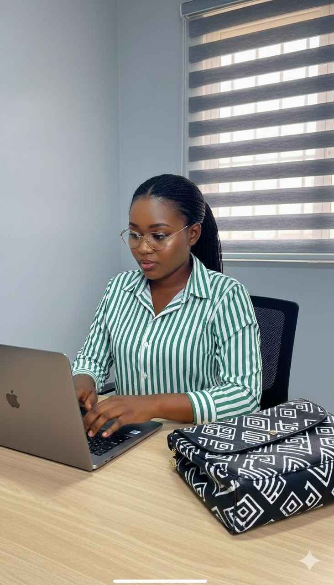
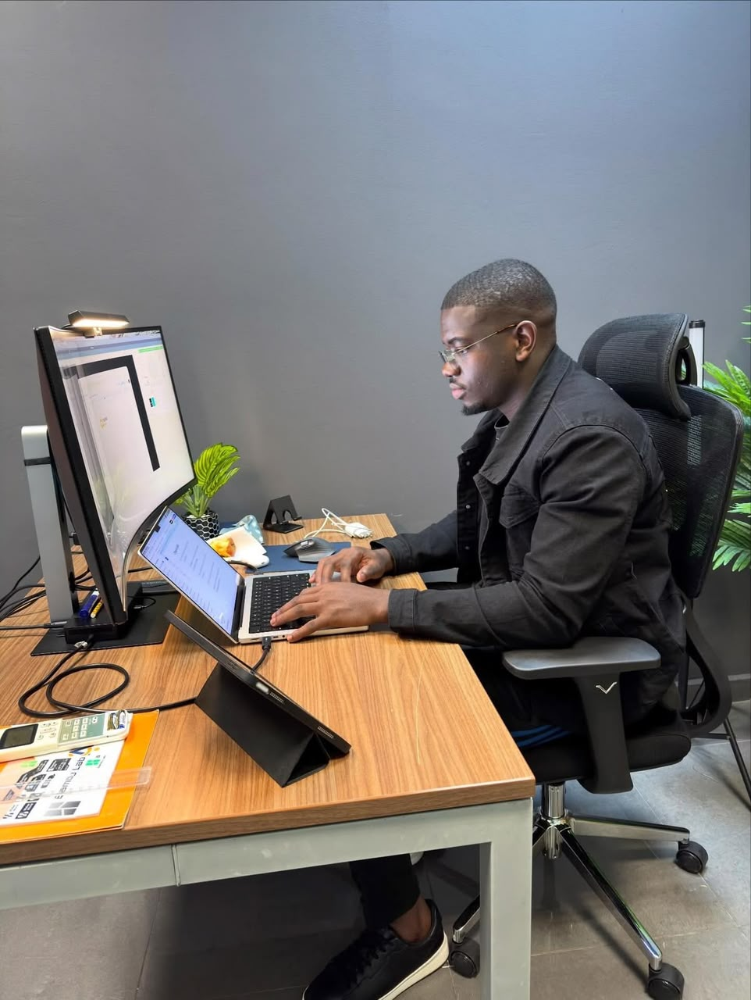
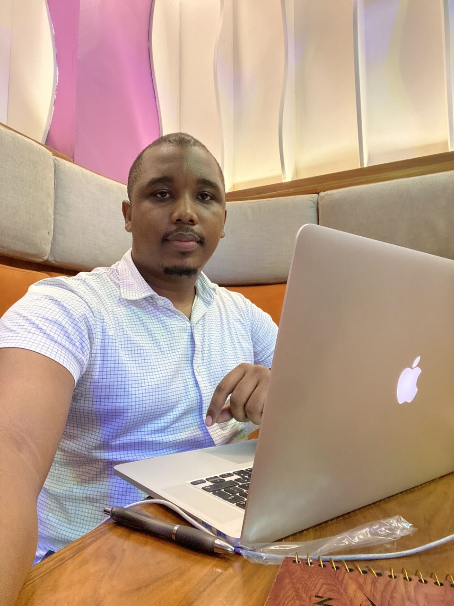

Aïssatou Diallo
CEO, TechWave
🇸🇳 Sénégal
CEO, TechWave
🇸🇳 Sénégal

Fondateur, DataAfrica
🇬🇭 Ghana

Directrice Produit, FinFlow
🇳🇬 Nigeria

Investisseur Tech
🇲🇦 Maroc

Experte Cybersécurité
🇸🇳 Sénégal

Lead Designer, UXAfrica
🇨🇮 Côte d'Ivoire
Data Scientist, InsightHub
🇳🇬 Nigeria
UX Researcher, Designly
🇿🇦 Afrique du Sud

Analyste de Données, DataAfrica
🇬🇭 Ghana